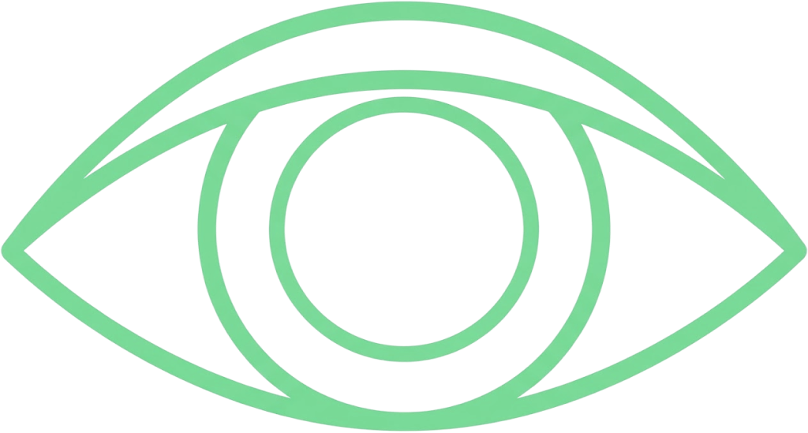
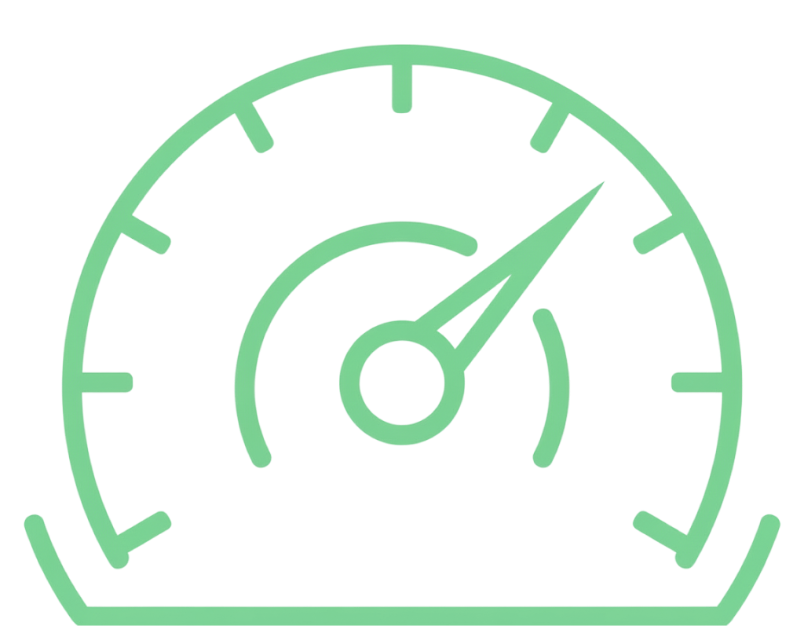
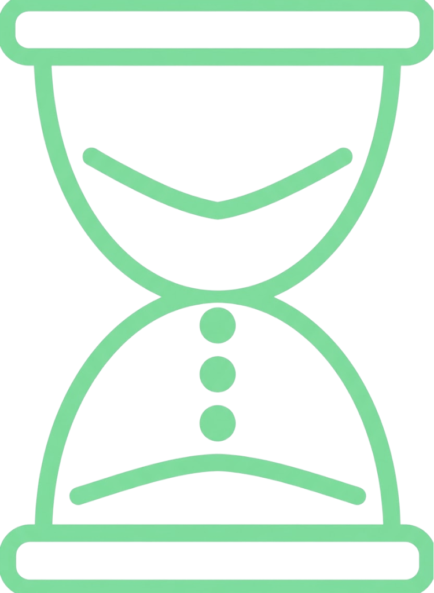
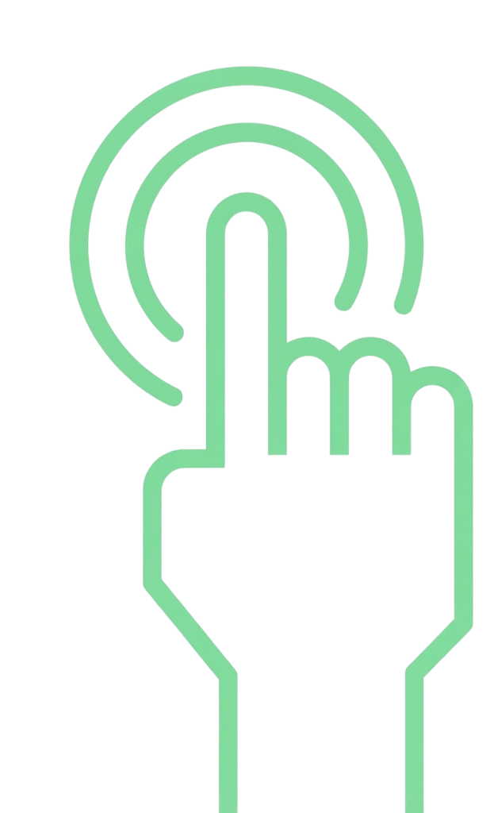
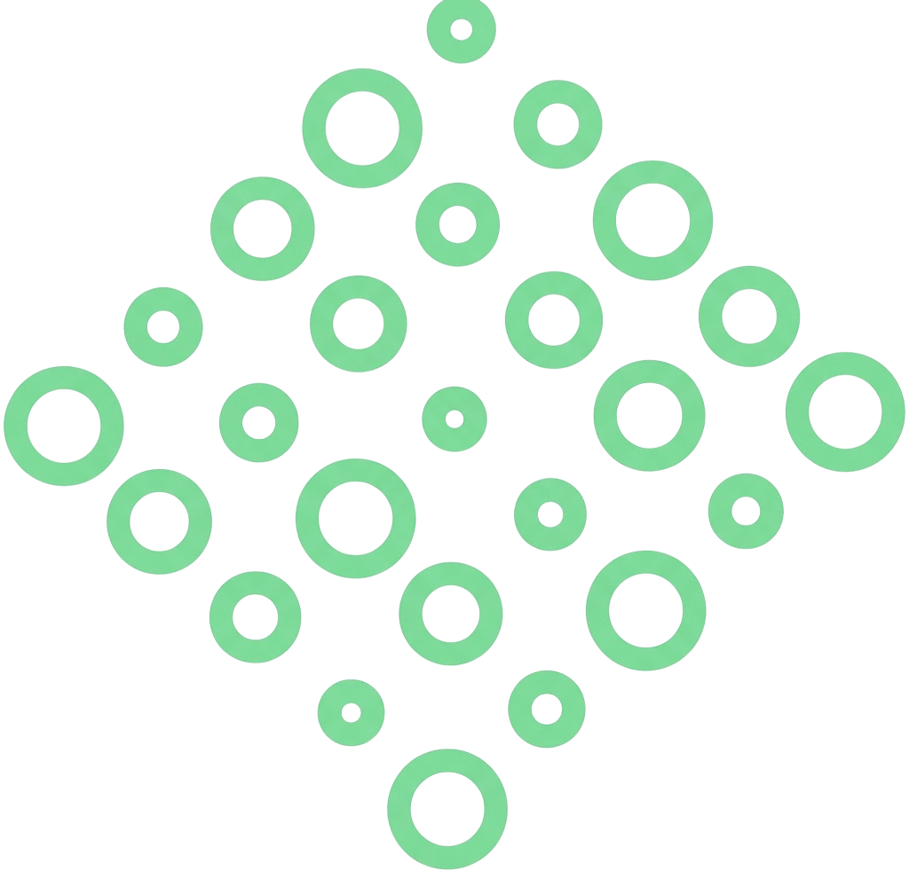
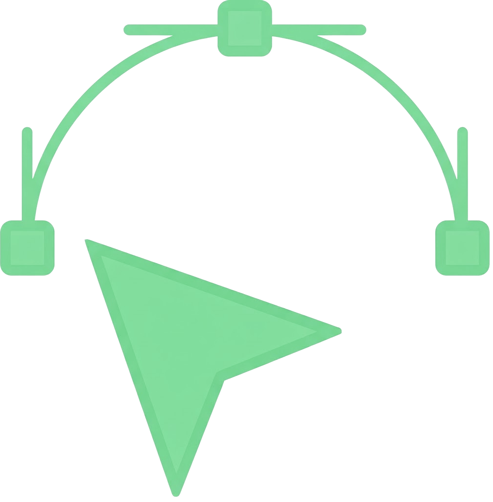

03
2024
盖亚假说 GAIA HYPOTHESIS
交互设计 INTERACTION DESIGN
The project transforms ecological data into a dynamic system that can be observed and physically influenced. Visitors first explore ecological states across different time periods, then intervene through a tangible interface. The duration and intensity of interaction affect the degree of visual disturbance, followed by a delayed recovery process that makes ecological feedback perceptible through interaction.
项目将生态数据转化为一个可被观察和介入的动态系统。参与者首先通过屏幕了解不同时间节点下的生态状态，随后通过实体界面对系统施加干预。系统根据介入持续时间与强度产生不同程度的视觉扰动，并在参与者停止操作后进入延迟恢复过程，使抽象的生态反馈关系转化为可感知的交互体验。
交互框架 / INTERACTION FRAMEWORK
用户行为 → 系统响应 / USER ACTION → SYSTEM RESPONSE
交互触点 / TOUCHPOINTS
系统参数 / SYSTEM PARAMETERS
体验目标 / EXPERIENCE GOALS
设计逻辑 / DESIGN RATIONALE
时间状态：
对应不同年份的生态数据状态
扰动程度：
控制粒子分散、结构破碎与
视觉不稳定程度
介入时长：
记录参与者持续介入系统的时间
恢复速度：
根据累计扰动决定系统重新聚合的速度与程度
交互没有将某个特定手势直接等同于“生态破坏”，而是把人的持续介入转化为系统压力。通过扰动、延迟与恢复，参与者能够感知行为累积与生态反馈之间的关系。
屏幕显示：呈现年份、森林数据与实时生态状态。
感知生态变化：理解数据如何对应不同的系统状态。
理解累积性影响：体验持续介入如何逐步改变系统，而非产生瞬时的单一反馈。
体验延迟反馈：观察行为停止之后，系统如何经历不同程度的恢复过程。
有形生态界面：以苔藓、土壤与透明结构构成主要身体交互区域。
传感输入：追踪手掌位置、运动、握拳状态与介入时长。

生态状态
Ecological State
系统反馈
System Feedback
用户观察
User Observation
身体介入
Physical Intervention
反思体验
Reflective Experience
交互逻辑链 / INTERACTION LOGIC CHAIN
01
观察 / OBSERVE
当前生态状态
Observe the current ecological state
屏幕呈现特定年份的森林数据与视觉化生态状态，建立数据与视觉变化之间的联系。
02
探索 / EXPLORE
选择不同时间状态
Explore different temporal states
切换不同年份，观察长期森林覆盖变化如何影响生态体的密度、完整性与动态状态。
03
介入 / INTERVENE
手势施加生态压力
Apply pressure through gestures
在 Leap Motion 感应区域抬升或移动手掌，握拳触发粒子碎裂，将手部运动转译为生态反馈。
04
恢复 / RECOVER
观察延迟反馈与恢复
Observe delayed feedback and recovery
停止介入后，系统根据累计扰动，以不同速度与程度逐步恢复，呈现生态反馈的延迟性。

观察屏幕
View Display

选择时间状态
Select Time State

观察生态变化
Observe Ecological Change

手掌移动 / 握拳
Palm Motion / Fist
持续介入
Sustain Intervention

粒子扰动累积
Accumulate Disturbance
停止介入
Release

系统延迟恢复
Delayed Recovery
Rather than assigning ecological destruction to a symbolic gesture, the interaction translates sustained human intervention into system pressure. Disturbance, delay, and recovery reveal the relationship between accumulated action and ecological feedback.
Screen Display: Displays year, forest data, and the corresponding ecological state.
Perceive Ecological Change: Understand how ecological data corresponds to changing system states.
Understand Accumulated Impact: Experience how sustained intervention gradually changes the system rather than producing a single immediate response.
Experience Delayed Feedback: Observe how the system continues to respond and recover after intervention has ended.
Sensor Input: Uses moss, soil, and transparent structures to create the primary physical interaction area.
Tracks palm position, motion, fist state and duration.